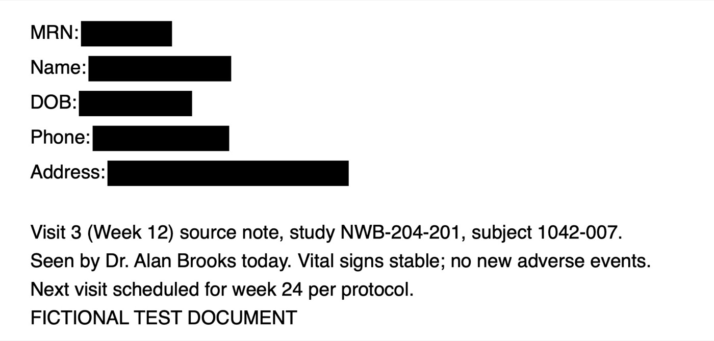
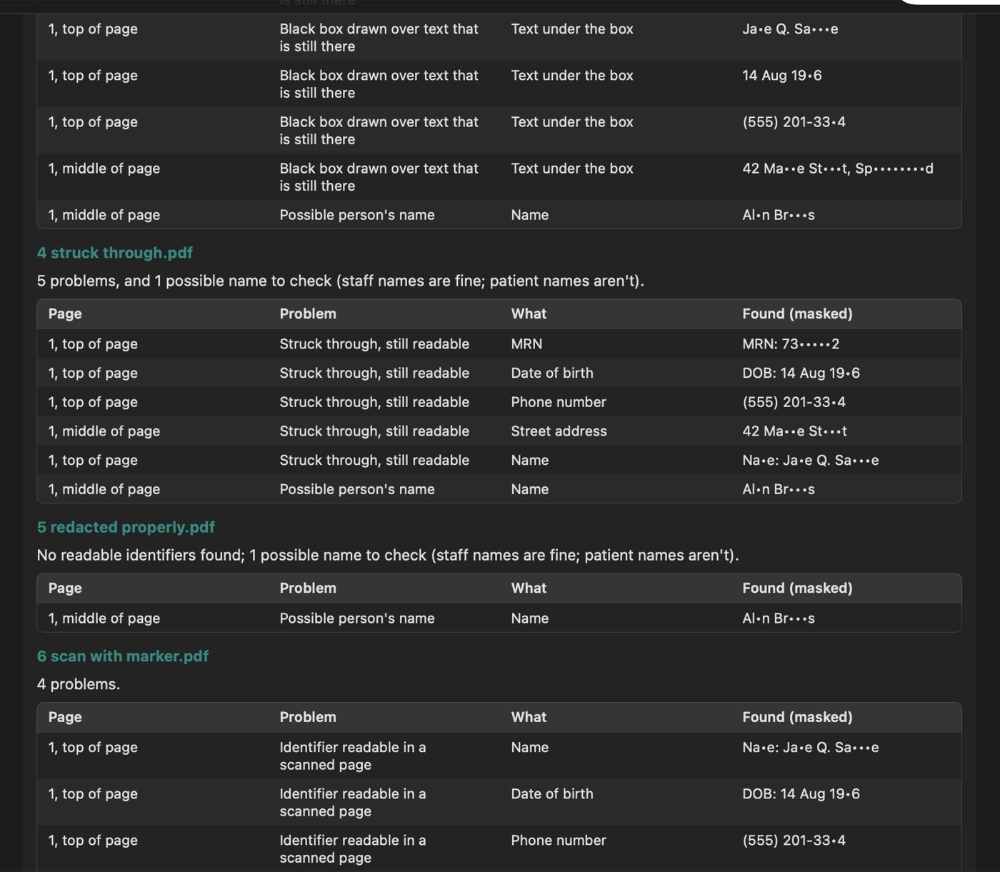

How to check that a PDF is really redacted
A black box on the screen doesn't mean the text underneath is gone. Before a source document, CRF page or data transfer leaves your hands, here is how to tell real redaction from redaction that only looks done, and the five ways it most often fails.
This page looks redacted. It isn't.
The made-up source note below has a black box over each patient identifier. Printed, it looks fine.

But the boxes were drawn on top of the page, so the text is still in the file. Select all, copy and paste it into any text editor and you get this:
MRN: Name: DOB: Phone: Address: 73829572
Jane Q. Sample
14 Aug 1966
(555) 201-3344
42 Maple Street, Springfield
Visit 3 (Week 12) source note, study NWB-204-201, subject 1042-007.Every name and number here is fictional, made for testing.
Anyone who receives the PDF can do the same, and so can search tools that index it. Black boxes added with a drawing, comment or highlight tool, or as a shape in Word before saving to PDF, all leave the text behind.
Five ways redaction goes wrong
1. A box drawn over live text
The box covers the text on screen, but the text layer underneath can still be copied, searched and read by software.
2. Redaction marked but never applied
PDF editors mark areas first and remove the text only when you apply the redactions. A file saved in between still holds everything.
3. Struck through
A line through a name or MRN shows it was meant to go, but it stays perfectly readable.
4. Marker on a scan
Thin or grey marker on paper often still shows the characters once scanned, and text recognition can read them back.
5. Missed entirely
A date of birth in a footer, an MRN on page 14, or a patient name column left in a CSV data transfer.
How to check by hand
- Copy and paste the page. Select all the text on each redacted page, paste it into a plain text editor, and look for anything that should be gone.
- Search for what you removed. Use Find for the patient's surname, the MRN or a date of birth. A hit means it's still in the file.
- Look for leftover marks and comments. Open the comments or annotations list in your PDF reader. Redaction marks or boxes listed there were added on top, not applied.
- Zoom in on scans. At 200% or more, marker that looked solid often isn't.
- Open data files as text. Check every column header in a CSV for names, MRNs, birth dates, phone numbers and addresses, including columns you didn't add.
That works for a few pages. Across a stack of source documents before a monitoring visit or a data transfer, it's slow and easy to skip.
What TrialCarta's redaction check finds
TrialCarta checks PDFs and CSV files for patient identifiers that are still readable: MRNs, names, dates of birth, phone numbers, email and street addresses, and Social Security numbers. It reports each one by file, page and problem:
- Black boxes drawn over text that is still there
- Redaction marks that were never applied
- Struck-through identifiers that are still readable
- Identifiers that were never redacted
- Identifiers readable in a scanned page
- Identifier columns in a data file
- Possible person's names, so you can tell staff names, which are fine, from patient names
The report masks every value it finds, so it can be shared without spreading what it found. The check runs entirely on your own computer. The documents aren't uploaded anywhere, and no AI model is involved: every finding comes from fixed rules, so the same file always gives the same report.

The report on made-up test documents, including the page above.
What it can't do
A bare number with no label next to it isn't recognized as an identifier, and marker that text recognition can't read may still be legible to a person. It's a check before you send, not a replacement for a second person's review.
Common questions
Is printing to PDF enough to remove the hidden text?
Not reliably. Many print-to-PDF paths keep the text layer, boxes and all. Printing to paper and scanning does flatten the page, but the scan can then be read by text recognition wherever the marker is thin.
Can I check a document without uploading it to a website?
Yes: the manual steps above need only a PDF reader and a text editor, and TrialCarta runs on your own computer. Uploading unredacted patient documents to an online checker defeats the purpose.
Does it work on Word files?
Save the file as PDF first and check that, since the PDF is what you'll send.
Check your documents before they go out
The redaction check is part of TrialCarta, alongside protocol version comparison and the schedule of assessments checklist. We'll show it on test documents like the one above.
Ask for a walkthrough